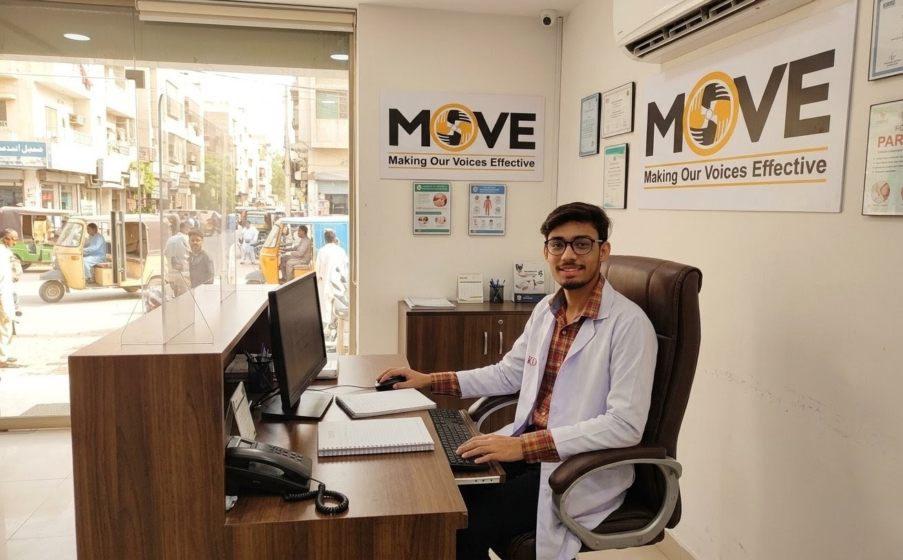

Work Experience
My Professional Journey
Asst. Microbiologist & Lab Technician
2019 – PresentC Lab and Diagnostic Center
- 2 years in Hematology Department
- 5 years in Microbiology Department
- Performed Gram stain, Leishman stain, AFB stain
- Expertise in microscopy, parasite identification, and culture analysis
- Trained junior staff and students
- Supervised training & internships of 12–15 students in laboratory practices

Laboratory Assistant (TB/AFB)
2019 – PresentGreen Star Social Marketing with Mercy Corp (NGO)
- 5+ years of experience in TB/AFB diagnostics
- Performed sputum sample processing and slide preparation
- Conducted AFB staining and assisted in result validation
- Maintained records and data entry as per WHO reporting standards
- Supported NGO health programs with reliable diagnostic services

Receptionist & Phlebotomist
2019Move Diabetic Center
- Handled sample collection with precision and care
- Managed patient communication and front desk operations
- Report typing and documentation
